# Librerías requeridas
library(tidyverse)
library(xtable) # Importar y exportar
library(openxlsx) # exportar "*.xlsx"
library(readxl) # Importar y exportar
library(gtable) # Importar y exportar
require(stats) # No se requiere instalar
library(lattice) # No se requiere instalar
library(ggrepel) # insertar rótulos a los puntos
require(SciViews) # Fig. dispersión con coef. de pearson
library(plotrix) # Figuras de cajas con múltiples variables
library(corrplot) # Figuras de elipses
library(psych) # Matrices de correlación para figuras de elipses
library(GGally) # Requerido para figura de pares con ggpairs
library(gganimate) # Para figuras animadas de dispersión
library(reshape) # Figuras de cajas con múltiples variables
library(gridExtra) # Para figuras estadísticas (varios factores)
library(grid) # Para figuras estadísticas (varios factores)Taller6. Opciones Gráficas
Nada Aún
Exploración gráfica multivariada - base Insectos
Objetivo de la actividad:
Poner en práctica el manejo de bases de datos y la visualización de datos uni, bi, tri y multivariados, para responder principalmente a dos tipos de objetivos:
Relaciones entre variables biológicas y de estas con las ambientales (ej. figuras de elipses, pares, dispersión y coplot).
Diferencias para el caso en el que contemos con variables agrupadoras (factores o v. cualitativas), orientado a evaluar las diferencias entre variables biológicas en gradientes espaciales o temporales (ej. entre grupos de sitios).
La base de datos a utilizar se presenta en dos formatos: Insectos.csv e Insectos.xlsx. Esta base cuenta con 2 variables ambientales y 6 biológicas, así como con un factor o variable agrupadora (cuencas), todo esto distribuido en las columnas. Además cuenta con y 20 localidades o quebradas (filas).
Procedimiento de la exploración
Cargar librerías requeridas
Cargar la base
Insectos(usar diferentes opciones para practicar)Explorar al objetivo 1 (figuras de elipses, pares, dispersión y coplot).
Explorar al objetivo 2 (figuras de elipses, pares, dispersión y coplot).
Realizar las opciones gráficas relacionadas a los objetivos.
Realizar transformaciones de los datos, para mejorar la visualización de patrones.
Practicar con leyendas y resultados de la visualización realizada.
Cargar las librerías requeridas
- Nota:
gganimaterequiere instalarse de la siguiente manera: ver_enlace_procedimiento
install.packages('gganimate')
devtools::install_github('thomasp85/gganimate')
Cargar o importar la base de datos
A continuación se presentan tres formas diferentes de importar o cargar bases de dato, tanto en el formato original de Excel (xlsx) como en el formato plano (csv). Se utilizará la tercera opción para el resto del ejrcicio.
#------------
datos <- read_excel("Insectos.xlsx") # paquete "readxl"
head(datos)# A tibble: 6 × 10
quebrada cuenca pH temp Efem Plec Tric Dipt Cole Ab
<dbl> <chr> <dbl> <dbl> <dbl> <dbl> <dbl> <dbl> <dbl> <dbl>
1 1 cuen1 6.8 17.4 26 4 9 30 3 72
2 4 cuen1 7.3 16.8 17 6 9 25 1 58
3 11 cuen1 5.6 16 9 3 28 24 3 67
4 13 cuen1 6.3 17.8 2 3 25 21 6 57
5 19 cuen1 5.6 18.2 6 4 24 12 13 59
6 3 cuen2 6.3 17 7 2 25 10 1 45datos <- read_csv2("Insectos.csv") # paquete "readxl"
head(datos)# A tibble: 6 × 10
quebrada cuenca pH temp Efem Plec Tric Dipt Cole Ab
<dbl> <chr> <dbl> <dbl> <dbl> <dbl> <dbl> <dbl> <dbl> <dbl>
1 1 cuen1 6.8 17.4 26 4 9 30 3 72
2 4 cuen1 7.3 16.8 17 6 9 25 1 58
3 11 cuen1 5.6 16 9 3 28 24 3 67
4 13 cuen1 6.3 17.8 2 3 25 21 6 57
5 19 cuen1 5.6 18.2 6 4 24 12 13 59
6 3 cuen2 6.3 17 7 2 25 10 1 45datos <- read.csv2("Insectos.csv") # paquete "utils"
head(datos) quebrada cuenca pH temp Efem Plec Tric Dipt Cole Ab
1 1 cuen1 6.8 17.4 26 4 9 30 3 72
2 4 cuen1 7.3 16.8 17 6 9 25 1 58
3 11 cuen1 5.6 16.0 9 3 28 24 3 67
4 13 cuen1 6.3 17.8 2 3 25 21 6 57
5 19 cuen1 5.6 18.2 6 4 24 12 13 59
6 3 cuen2 6.3 17.0 7 2 25 10 1 45
1. Figuras de elipses
El Paquete corrplot es el que permite realizar las opciones gráficas de elipses a color, ingresar a este enlace:
Otro enlace a corrplot:
Las figuras de correlación realizadas con el paquete corrplot, son una buena opción para evaluar los patrones generales de relaciones positivas (azul) y/o negativas (rojo), entre parejas de variables. Funcionan para objetivos orientados en la relaciones de (1) variables biológicas, (2) variables ambientales y (3) variables biológicas con las ambientales.
# Elipses con colores
M <- cor(datos[,3:10]) # Matriz de Correlación (M)La Figura 1 muestra la relación entre las variables, a partir de figuras de elipses y de circulos.
# Elipses con colores
x11()
par(mfrow = c(1,2), mar = c(3, 3, 2, 1))
corrplot(M, method = "ellipse") # Figura de correlaciones con elipses
# Elipses con colores
corrplot(M, method = "circle") # Figura de correlaciones con circulos
par(mfrow = c(1,1))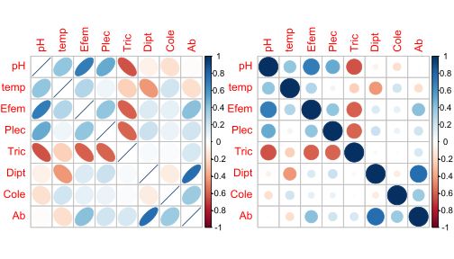
La Figura 2 muestra la relación entre las variables, a partir de figuras de elipses, además incorpora al nivel de correlación entre las parejas de variables con los coeficientes de Pearson.
# Elipses con colores
X11()
corrplot.mixed(M, upper="ellipse")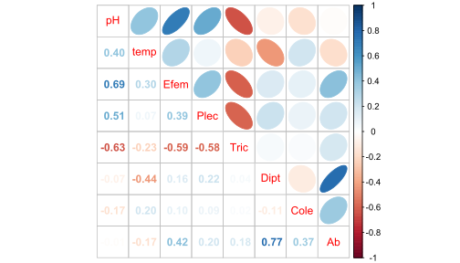
La siguiente opción de correlación (Figura 3), presenta un código más compejo que las anteriores, pero permite generar una visualización más completa de las relaciones entre parejas de variables y sus coeficientes de correlación de Pearson (también se pueden probar otros coeficientes como Spearman o Kendall).
x11()
corrplot(M, method = "circle", # Correlaciones con circulos
type = "lower", insig="blank", # Forma del panel
order = "AOE", diag = FALSE, # Ordenar por nivel de correlación
addCoef.col ="black", # Color de los coeficientes
number.cex = 0.8, # Tamaño del texto
col = COL2("RdYlBu", 200)) # Transparencia de los circulos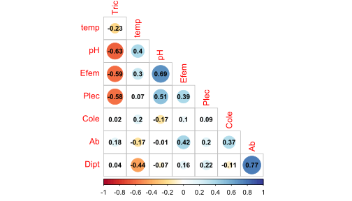
La siguiente figura de correlaciones (Figura 4) es apropiada para casos en los que tenemos muchas variables biológicas (ej. tipos de taxones) e interesa evaluar su relación con las variables ambientales.
# Elipses con colores
M1 <- cor(datos[,3:4], datos[,5:10]) # Matriz de Correlación (M)
# Elipses con colores
X11(6,8)
corrplot(M1, method = "ellipse", type="upper")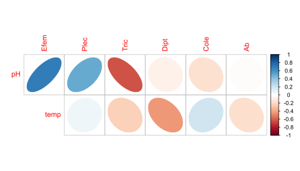
3. Figuras de Dispersión por pares de variables (pairs)
El Paquete pairs es el que permite realizar las opciones gráficas de dispersión por parejas de variables, ingresar a este enlace:
Otro enlace a pairs:
Los gráficos de pares son complementarios a los de correlación, pero permiten conocer otros detalles en las relaciones entre parejas de variables (ej. relaciones lineaes vs. suavizadas o loess). En la siguiente figura (Figura 5), además de visualizar si la dispersión de los puntos se orienta hacia una relación positiva o negativa, entre más se ajuste la línea verde (tendencia lineal), con la negativa (tendencia no lineal, suavizada o loess), se puede precisar mejor, si hay una verdadera relación lineal entre las parejas de variables en comparación.
# Figuras de pares
pairs ((datos[,c(3:9)]),panel=function(x,y)
{abline(lsfit(x,y)$coef,lwd=2,col=3) # lwd = Ancho de la línea
lines(lowess(x,y),lty=1,lwd=3,col=2) # col= Color de la línea
points(x,y,cex=1)}) 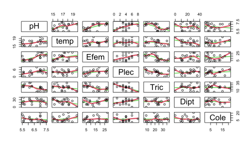
Para la siguiente figura es primordial que lo que consideremos un factor, lo sea como tal. Si se observa la estructura de la base de datos de este ejemplo (str(datos)), se encontrará que R no asume a la columna “cuenca” como un factor (la asume como un caracter chr). En este sentdo, a continuación se convertirá en un factor, con el comando as.factor.
# Ajustar el factor cuenca
datos$cuenca <- as.factor (datos$cuenca)Es importante mencionar que estas figuras no son apropiadas para casos en los que se manejen demasiadas variables, para lo cual las elipses anteriores serán una mejor opción. En la siguiente figura (Figura 6) se seleccionan las cinco variables más correlacionadas y al final de la línea de código, se define al factor a graficar (col=datos$cuenca), que permitirá colocar colores a los puntos, de acurdo al tipo de cuenca al que pertenezcan.
# Incluir el factor (cuenca)
x11()
pairs ((datos[,c(3,5,7,8,10)]),panel=function(x,y)
{abline(lsfit(x,y)$coef,lwd=2,col=3)
lines(lowess(x,y),lty=2,lwd=2,col=2)
points(x,y,col=datos$cuenca, cex=1.4,pch=19)})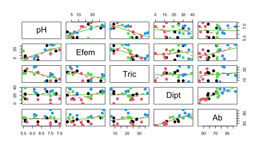
A continuación se presenta una variante a las figuras de pares (Figura 7), que por medio de la función panel, permite incorporar otros elementos en la matriz gráfica, como histogramas para visualizar el patrón de simetría de cada variable y el valor de correlación con coeficientes como el de Pearson. Las líneas rojas definen la relación no lineal o suavizada (loess o lowess) entre las parejas de variables.
# Correlaciones de Pearson
library(SciViews)
x11()
pairs(datos[,c(3,5,7,8,10)], diag.panel = panel.hist,
upper.panel = panel.cor, lower.panel = panel.smooth)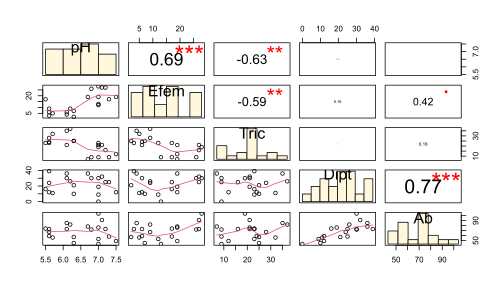
Figuras de pares en ggplot2
El Paquete ggpairs es el que permite realizar las opciones gráficas de dispersión por parejas de variables, ingresar a los siguientes enlaces:
La siguiente figura (Figura 8), es apropiado para pocos grupos de muestras (ej. < 4 cuencas) y para pocas variables como las que se definen a continuación. También es recomendable realizarlas con muestras que presenten un número considerable de observaciones, lo cual permita tener una nube de puntos más definida.
# Figura de pares con cuatro variables seleccionadas
ggpairs(datos, # Data frame
columns = c(3,7,8,10), # Columnas o variables
aes(color = cuenca, alpha = 0.5), # Color por cuenca
upper = list(continuous="points")) 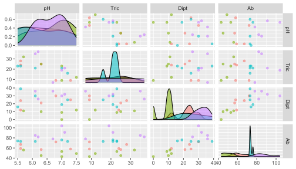
En la siguiente figura (Figura 9) se incorporan dos elementos adicionales, correspondientes a los coeficientes de correlación de Pearson y regresiones lineales, para cada grupo analizado (cuencas).
# Figura de pares incorporando coeficientes de correlación y regresiones lineales
ggpairs(datos, columns = c(3,7,8,10),
aes(color=cuenca, alpha = 0.5),
lower=list(continuous="smooth"))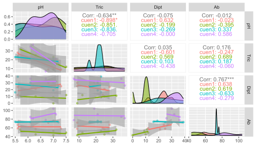
3. Histogramas
Los presentes histogramas valoran el patron de distribución en la frecuencia de los datos de la abundancia de los insectos (variable Ab), en términos generales (Figura 10) y para cada cuenca estudiada (Figura 11).
# Frecuencias de abundancias
histogram (~Ab,data=datos, ylab="Porcentaje del Total",
xlab="Abundancia de insectos")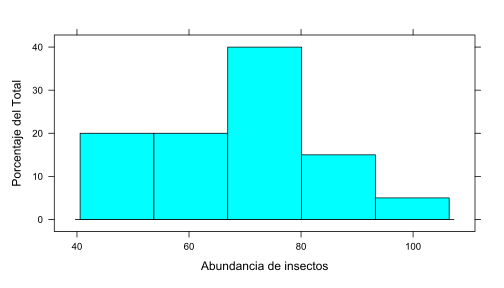
El siguiente histograma (Figura 11), permite evaluar el patrón de abundancia de los insectos en cada cuenca evaluada.
# Frecuencias de abundancias por cuencas
histogram (~Ab|cuenca,data=datos, ylab="Porcentaje del Total",
xlab="Abundancia de insectos")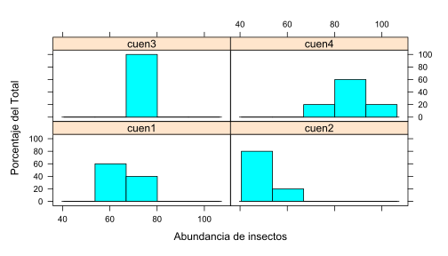
Las figuras de densidad (Figura 12) son otra forma de valorar la distribución de las frecuencias de las variables en estudio, pero suavizando o generando un gradiente contínuo de frecuencia.
# Frecuencias de abundancias
densityplot(~Ab,data=datos, ylab="Porcentaje del Total",
xlab="Abundancia de insectos") 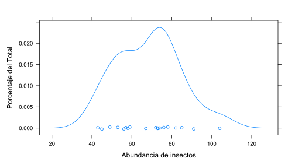
A continuación se muestra un histograma de frecuencias en la abundancia de los insectos (Figura 13), para cada cuenca evaluada, generando un patrón marcado que difiere para cada lugar evaluado.
# Frecuencias de abundancias por cuencas
densityplot(~Ab|cuenca,data=datos, ylab="Porcentaje del Total",
xlab="Abundancia de insectos")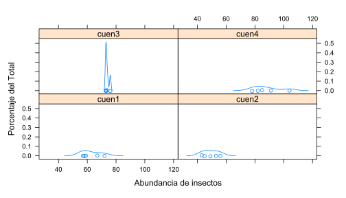
Las dos figuras que siguen (Figura 14 y Figura 15), utilizan comandos del paquete ggplot2 para visualizar de una forma más compacta a la distribución de frecuencias de la variable abundancia de insectos (AB) en las cuatro cuencas evaluadas.
# Frecuencias de abundancias por densidad
ggplot(data = datos, aes(x = Ab, color = cuenca)) +
geom_density(aes(fill = cuenca), alpha = 0.5) +
labs( y="Frecuencia", x="Abundancia")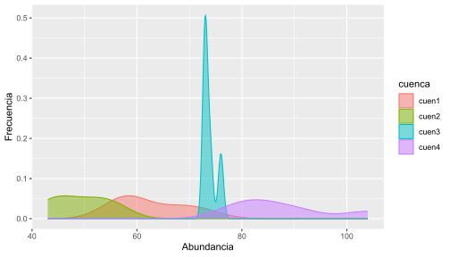
# Otra opción
ggplot(data = datos, aes(x = Ab, color = cuenca)) +
geom_density(aes(fill = cuenca)) +
facet_wrap(~ cuenca)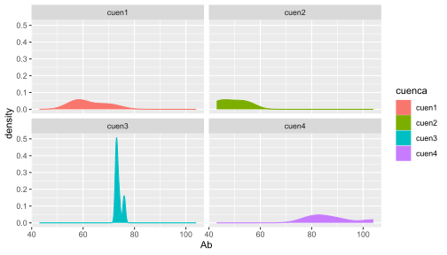
4. Dispersión X-Y
El Paquete lattice es uno de los que permite realizar las opciones gráficas de dispersión, ingresar a este enlace:
A continuación se presenta una figura de dispersión (Figura 16), que relaciona a la abundancia de Efemerópteros con los niveles de pH, adicionalmente, se muestra el patrón de dispersión de los datos, en los que los colores representan a las diferentes cuencas evaluadas.
# Regresión lineal (esquema básico)
library(lattice)
datos$cuenca <- as.factor (datos$cuenca) # cuenca como factor
x11(8,6)
plot(Efem~pH, # Relación pH vs. Efem
col=as.integer(cuenca), # Colores por tipo de cuencas
data=datos, pch=19) # Base de datos
legend(5.5,25, # Coordenadas de la leyenda
legend=levels(datos$cuenca), # Grupos de la leyenda
pch=19,col=1:4,cex=1.2)
lines(abline(lm(datos$Efem~datos$pH), # regresión lineal
lwd=2,col=2, lty=2))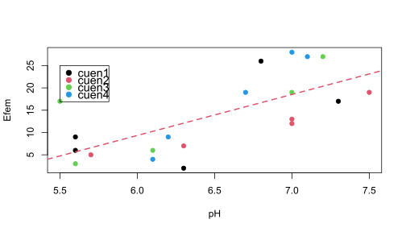
Dispersión X-Y con ggplot2
El Paquete ggplot2 es el que permite realizar las opciones gráficas de dispersión bivariados, ingresar a este enlace:
Otro enlace a ggplot2:
Las tres figuras que siguen, muestran opciones más compactas que la grafica anterior, para visualizar relaciones bivariadas en los descriptores en estudio, permitiendo también analizar el patrón de dispersión de los datos para cada cuenca evaluada (colores). La Figura 17 permite visualizar la relación lineal incluyendo bandas grises que representan los límites de confianza de la proyección realizada.
# Regresiones lineales (Esquema ggplot2)
ggplot(datos,aes(x = pH,y = Efem)) +
geom_point(aes(color = cuenca), size = 3) +
geom_smooth(method= "lm") +
theme_classic()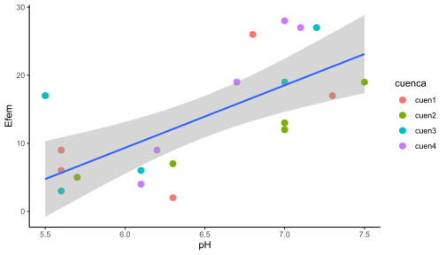
La Figura 18, a diferencia de la anterior, permite visualizar una relación suavizada en la pareja de variables en comparación. Esta relación no lineal es conocida como Loess o Lowess.
# Regresiones suavizadas - Loess o Lowess (Esquema ggplot2)
ggplot(datos,aes(x = pH, y = Efem)) +
geom_point(aes(color = cuenca), size = 3) +
geom_smooth()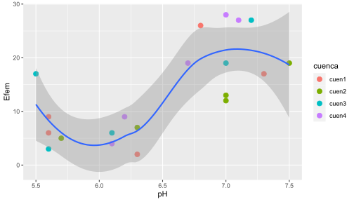
En la Figura 19 se eliminan los intervalos de confianza (bandas grises) y aumenta el suavizamiento con el comando span = 0.4.
# Regresiones suavizadas (Loess)
ggplot(datos,aes(x = pH, y = Efem)) +
geom_point(aes(color = cuenca), size = 3) +
geom_smooth(se = FALSE, span = 0.4)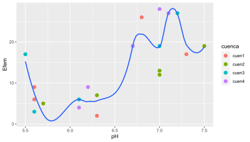
5. Cajas y Bigotes
El Paquete lattice es uno de los que permite realizar las opciones gráficas de cajas, ingresar a este enlace:
El Paquete ggplot2 presenta opciones más estéticas y robustas para estas y muchas más figuras, ingresar a este enlace:
Las figuras de cajas y bigotes, permiten visualizar medidas de tendencia central como las medianas (segundo cuartil) y el rango intercuartílico (límites de las cajas), es este caso, para el patrón de abundancia de los insectos en las cuatro cuencas evaluadas (Figura 20).
# Figuras de Cajas y bigotes
datos$cuenca<-factor(datos$cuenca,
levels=c("cuen1","cuen2","cuen3","cuen4"))
# Cajas y Bigotes con muescas
boxplot(Ab~cuenca,data=datos,notch=TRUE,
xlab="Cuencas",ylab="Abundancia",
col="lightgray", cex.lab=1.3) # Probar con otros colores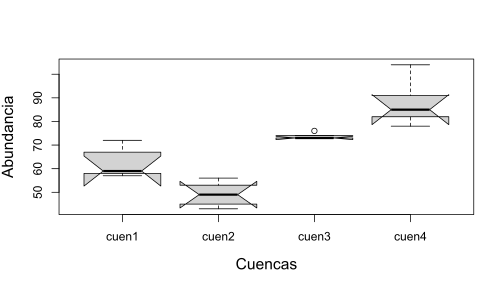
Enlaces de paletas de colores para la edición de las figuras:
A continuación se visualiza el patrón de variación en la abundancia de los insectos (Figura 21), para las cuatro cuencas evaluadas, adicionando colores especificos, tomados de los enlaces anteriores.
# Buscar en google: colorbrewer2
ggplot(datos, aes(x=cuenca, y=Ab)) +
geom_boxplot(aes(fill = cuenca)) +
labs(x="Cuencas", y= "Abundancia de Insectos") +
scale_fill_manual(values = c('#fc8d59','#ffffbf','#99d594','#377eb8'))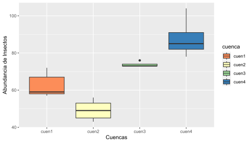
En la Figura 22 se incluyen muescas a las cajas, para permitir hacer una comparación más precisa de las abundancias de los insectos en las cuencas evaluadas.
# Organización por nivel de magnitud
ggplot(datos, aes(x = fct_reorder(cuenca, Ab),y=Ab)) +
geom_boxplot(notch = T, aes(fill = cuenca)) +
scale_fill_manual(values = c('#fc8d59','#ffffbf','#99d594','#377eb8'))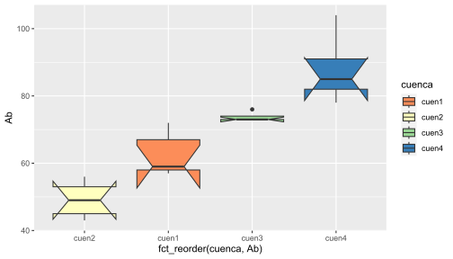
Paréntesis Base de datos de lirios (iris) para figura de violín (Figura 23). Estas figuras permiten visualizar la simetría en la distribución de las frecuencias de las variables.
# violin: como histograma acostado
ggplot(iris, aes(x = Species, y = Sepal.Length)) +
geom_violin(aes(fill = Species)) +
geom_jitter() +
scale_fill_manual(values = c('#fc8d59','#ffffbf','#99d594')) +
theme_bw()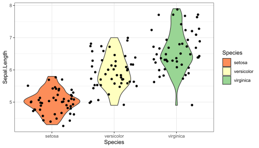
La Figura 24 muestra su versatilidad en que permite incorporar diferentes variables por cada panel presentado. Las cajas de colores representan a los grupos en comparación (cuencas).
# Figuras multivariadas de Cajas y bigotes
x11()
ggplot(melt(datos[,c(2,c(3,7,8,10))]), aes(x=variable, y=value)) +
geom_boxplot(aes(fill=cuenca)) +
scale_fill_manual(values = c('#fc8d59','#ffffbf','#99d594','#377eb8')) +
labs(x="",y="Abundancia") +
facet_wrap(~ variable,scales="free") +
theme_bw()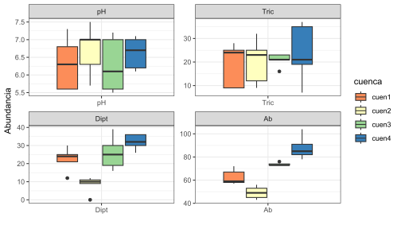
6. Coplot
Las figuras de coplot, permiten relacionar a tres variables, en donde una de ellas puede ser continua o discreta, mediante segmentaciones.En la Figura 25 se incorporan regresiones suavizadas (loess). Seis páneles en la relación pH y Efemerópteros se asocian a seis barras de temperatura, en donde el primer panel de la parte inferior se correlaciona con la primera barra de temperatura, ubicada a la izquierda y así sucesivamnte.
# Coplot con líneas de ajuste suavizado (loess)
with(datos, {
coplot(Efem~pH|temp,
panel = panel.smooth)})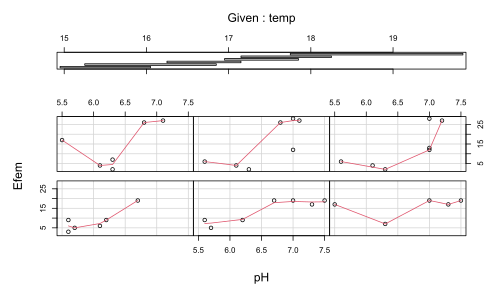
Para este caso (?@fig-fig27), se realiza una categorización de dos variables contínuas, que permitirán construir el coplot sin solapamiento de las barras de la tercera variable. Las relaciones se proyectan de forma lineal y el la siguiente ifura serán de forma suavizada.
# Categorización de dos variables contínuas (pH y Temp)
summary(datos[,3:9]) pH temp Efem Plec Tric
Min. :5.50 Min. :15.00 Min. : 2.00 Min. :0.00 Min. : 7.00
1st Qu.:6.00 1st Qu.:15.95 1st Qu.: 6.00 1st Qu.:3.00 1st Qu.:15.00
Median :6.50 Median :17.05 Median :12.50 Median :4.00 Median :22.00
Mean :6.48 Mean :16.99 Mean :13.75 Mean :3.85 Mean :20.95
3rd Qu.:7.00 3rd Qu.:17.88 3rd Qu.:19.00 3rd Qu.:5.00 3rd Qu.:25.00
Max. :7.50 Max. :19.80 Max. :28.00 Max. :8.00 Max. :37.00
Dipt Cole
Min. : 0.00 Min. : 1.00
1st Qu.:12.00 1st Qu.: 3.00
Median :24.50 Median : 6.00
Mean :22.15 Mean : 7.70
3rd Qu.:30.00 3rd Qu.:12.25
Max. :39.00 Max. :21.00 clasetemp <- cut(datos$temp,seq(15,20,1.2),include.lowest=T,
labels = c("t.baja", "t.media1","t.media2", "t.alta"))
clasepH <- cut(datos$pH,seq(5,8,1),include.lowest=T,
labels = c("pH.bajo", "pH.medio","pH.alto"))# Función para el coplot
panel.lm = function(x, y, ...) {
tmp<-lm(y~x,na.action=na.omit)
abline(tmp, lwd = 1.5, col= 2)
points(x,y, ...)}# Relación trivariada - Lineal
coplot(Efem~pH | clasetemp, pch=19,
panel = panel.lm, data=datos)
coplot(Efem~pH | clasetemp, pch=19,
panel = panel.smooth, data=datos)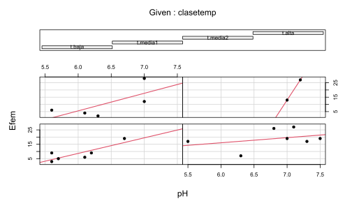
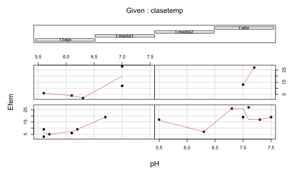
7. Figuras con estadísticos (promedios, errores, …)
El Paquete ggplot2 es uno de los que permite realizar las opciones gráficas de barras con estadísticos, ingresar a este enlace:
Exploratory Data Analysis with ggplot
Existen otros enlaces en los que se puede encontrar información complementaria para figuras de barras, como los siguientes
A continuación se muestra el procedimiento con lenguaje Tidyverse, para realizar una tabla con el resumen de diferentes insumos estadísticos, para cada grupo (cuencas) de la base de datos.
# Resumen estadístico "datos_resum"
datos_resum <- datos %>% # Base de datos resumida
group_by(cuenca) %>% # Factor o variable agrupadora
summarise(datos.m = mean(Ab), # Media de cada grupo del factor
datos.de = sd(Ab), # Desviacioes estándar de cada grupo
datos.var = var(Ab), # Varianzas de cada grupo
n.Ab = n(), # Tamaño de cada grupo
datos.ee = sd(Ab)/sqrt(n())) # Error estándar de cada grupo
datos_resum# A tibble: 4 × 6
cuenca datos.m datos.de datos.var n.Ab datos.ee
<fct> <dbl> <dbl> <dbl> <int> <dbl>
1 cuen1 62.6 6.58 43.3 5 2.94
2 cuen2 49.2 5.40 29.2 5 2.42
3 cuen3 73.8 1.30 1.7 5 0.583
4 cuen4 88 10.1 102. 5 4.53 La siguiente asignación (DatosPlot), incorpora las capas requeridas para realizar una figura de columnas y de líeas acotadas, que representan a los promedios y a los errores estándar respectivamente.
# Figura de promedios y errores estándar
DatosPlot<-
ggplot(datos_resum, aes(cuenca, datos.m, dev.off())) +
geom_bar(stat="identity", col="black", fill="#377eb8") +
geom_errorbar(aes(ymin=datos.m-datos.ee,
ymax=datos.m+datos.ee),width=0.2) La asignación (DatosPlot), es tgraficada con el siguiente comando, en el que se incluyen elementos como los rótulos de los ejes (labs) y el tema de fondo (theme_classic()) (Figura 28).
# Imprimir la figura de promedios con errores estándar
print (DatosPlot +
labs(y="Abundancia ± e.e.",
x = "cuenca") +
scale_fill_manual(values= c("#A1D5D5")) +
theme_classic())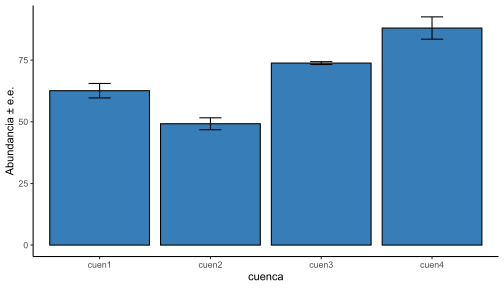
Para la siguiente figura de Cajas y Bigotes, el comando stat_boxplot(geom = "errorbar",...) permite realizar gráficas sin necesidad de extraer algunos estadísticos previamente.
# Opción de cajas y bigotes con errores estándar
ggplot(datos, aes(x=cuenca, y= Ab, fill= cuenca)) +
stat_boxplot(geom = "errorbar",width = 0.05) +
geom_boxplot(width = 0.4,
notchwidth = 0.9, outlier.colour="red",
outlier.fill="red",
outlier.size=3, outlier.alpha = 0.2) +
theme_classic() +
scale_fill_manual(values=c('#fc8d59','#ffffbf','#99d594','#377eb8')) +
labs(x = "Cuencas", y = "Abundancia ± e.e.")+
scale_y_continuous(limits = c(40,90))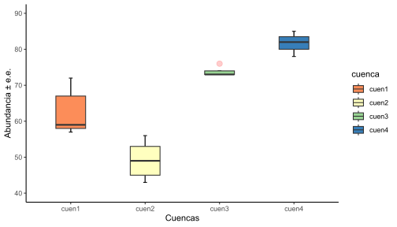
Base de datos con múltiples factores
Lo que diferencia a esta base de datos (insectos1.csv) de la anterior (insectos.csv), es que presenta a diferentes variables agrupadoras o factores, como periodos de lluvia, Gruos Funcionales Alimenticios (GF) y Muestreos. Para el siguiente ejercicio se realizará el resumen estadístico de los dos primeros factores.
# Base de datos multifactorial (insectos1)
datos1<-read_csv2("Insectos2.csv") # Formato *xlsx
head(datos1) # Encabezado# A tibble: 6 × 6
No Muestreo GF Lluvia Ab Biom
<dbl> <chr> <chr> <chr> <dbl> <dbl>
1 1 M1 C-F P1 98 56.0
2 2 M2 C-F P1 198 52.7
3 3 M3 C-F P2 45 11.4
4 4 M4 C-F P2 51 25.3
5 5 M5 C-F P2 3 0.36
6 6 M6 C-F P2 69 23.6 # Resumen estadístico "datos_resum"
datos_resum <- datos1 %>% # Base de datos resumida
group_by(Lluvia,GF) %>% # Factor o variable agrupadora
summarise(datos.m = mean(Biom), # Media de cada grupo del factor
datos.de = sd(Biom), # Desviacioes estándar de cada grupo
datos.var = var(Biom), # Varianzas de cada grupo
n.Biom = n(), # Tamaño de cada grupo
datos.ee = sd(Biom)/sqrt(n())) # Error estándar de cada grupo
datos_resum# A tibble: 10 × 7
# Groups: Lluvia [2]
Lluvia GF datos.m datos.de datos.var n.Biom datos.ee
<chr> <chr> <dbl> <dbl> <dbl> <int> <dbl>
1 P1 C-F 37.0 30.0 902. 3 17.3
2 P1 C-R 31.7 32.1 1029. 3 18.5
3 P1 D 361. 120. 14411. 3 69.3
4 P1 R 53.5 69.8 4873. 3 40.3
5 P1 T 190. 296. 87533. 3 171.
6 P2 C-F 14.4 10.2 105. 5 4.58
7 P2 C-R 88.5 115. 13273. 5 51.5
8 P2 D 176. 94.9 9010. 5 42.4
9 P2 R 21.9 12.9 165. 5 5.75
10 P2 T 151. 223. 49655. 5 99.7 Las asignaciones f1 y f2, corresponden a las mismas figuras bifactoriales, en donde la primera se muestra con pocos ajustes de sus ejes y fondo, comparada a la segunda que presenta una mayor edición. Finalmente el comando grid.arrange permite graficar a las dos figuras en un mismo panel.
# Figura 1 (f1)
f1 = ggplot(datos_resum, aes(x=GF, y=datos.m, fill=Lluvia)) +
geom_bar(stat="identity", color="black",
position=position_dodge()) +
geom_errorbar(aes(ymin=datos.m, ymax=datos.m+datos.de), width=.2,
position=position_dodge(.9))
# f2: Otro formato de figura bifactorial - theme_classic
f2 = f1+labs(title="Biomasa por GF",
x="Grupos Funcionales - GF",
y = "Biomasa")+
theme_classic() +
scale_fill_manual(values=c('#E69F00','#999999'))
# Impresión de un panel con las dos figuras de forma horizontal (f1 y f2)
grid.arrange (f1, f2, ncol=2)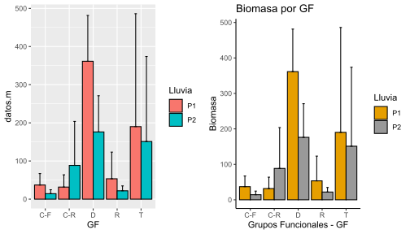
Cambiando la ubicación por columnas ncol por la de filas nrow, se cambia la posición de las figuras anteriores en el mismo panel.
# Impresión de un panel con las dos figuras de forma vertical (p1 y p2)
x11()
grid.arrange (f1, f2, nrow=2)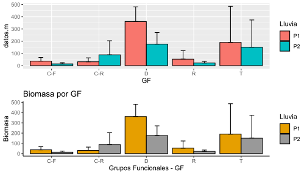
parentesis Figuras de dispersión animadas
Nota: ¡No estresarse en caso de que no se logre ejecutar esta figura!
library(ggplot2)
library(gganimate)
theme_set(theme_bw()) # Tema o fondo de la figura por default# Demo
library(gapminder)
p <- ggplot(
gapminder,
aes(x = gdpPercap, y=lifeExp, size = pop, colour = country)
) +
geom_point(show.legend = FALSE, alpha = 0.7) +
scale_color_viridis_d() +
scale_size(range = c(2, 12)) +
scale_x_log10() +
labs(x = "GDP per capita", y = "Life expectancy")
p
p + transition_time(year) +
labs(title = "Year: {frame_time}")
Taller de entrenamiento
Objetivo: Poner en práctica los conceptos vistos en el módulo de exploratorios, realizando las siguientes opciones gráficas en las bases de datos de lirios data(iris):
Figuras de elipses
Figuras de Dispersión por pares de variables (pairs)
Histogramas
Dispersión X-Y
Cajas y Bigotes
Coplot
Figuras con estadísticos (promedios, errores, …)